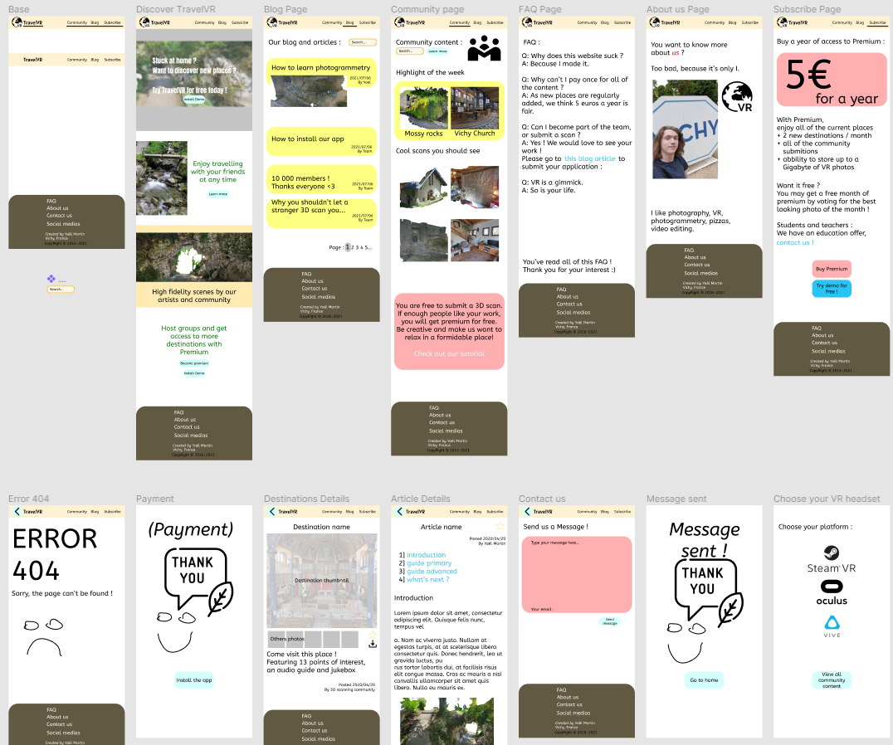
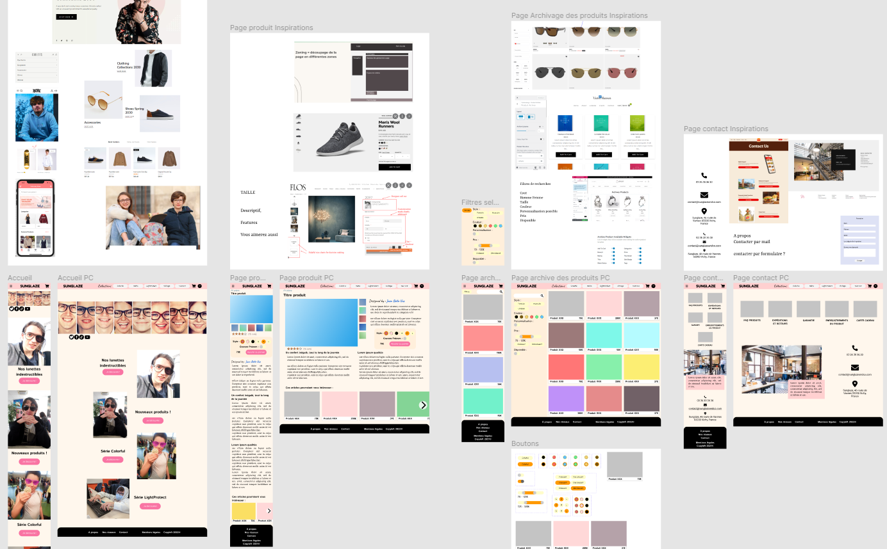
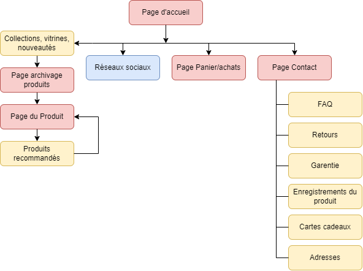

Webdesign et Programmation
Sommaire
I. Maquettes Figma
I.i Site web "Travel VR", découverte de Figma
Télécharger la fiche persona du projet
Voir la version mobile intéractive
I.ii Site web e-commerce en binôme "Sunglaze"
Télécharger la note d'intention du projet
Voir la version mobile intéractive
Voir la version PC intéractive
 II. À propos de ce site
Ce site a été conçu dans le cadre d'une SAE en BUT Métiers du Multimédia et de l'Internet.
C'est un portfolio/CV numérique, qui doit mettre en valeur notre travail et s'adapter aux écrans en utilisant le responsive design.
II.i Attractivité des Frameworks
J'ai d'abord cherché un header responsif, avec des templates, une solution complète en WYSIWYG,
mais ils ne correspondent pas à ce que je voulais utiliser, ne marchent pas complétement ou utilisent trop de styles css.
Les Bootstrap semblaient un moyen de gagner du temps, mais apprendre leur fontionnement n'était pas envisageable dans le cadre du projet.
II.ii Codage et hébergement
Programmation sur
Visual Studio Code avec l'extension Live Preview.
Hébergement en local pour consultation sur téléphone avec
UwAmp.
Hébergement en ligne sur
GitHub Pages, qui est gratuit et parfaitement adpaté pour un site statique.
J'ai réussi à faire un menu responsive en HTML CSS seulement, à l'aide d'une checkbox cachée,
en m'inspirant de
ce code.
J'ai compris la différence entre les pixels réels et ceux du viewport grâce à
cette page.